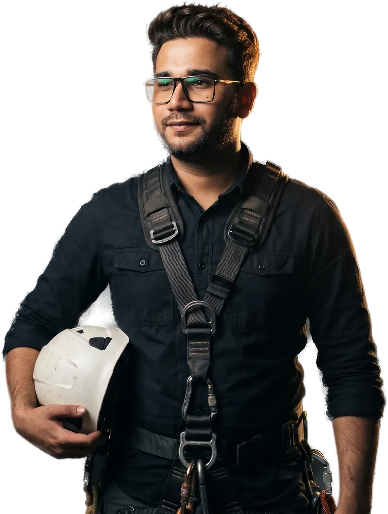

Two from Malaysian job sites, two from the work I do now. Each one is written the same way: what the problem was, what I built or ran, and what came of it.
Jan 2024–now · Founder
Virin Digital
AI workflows and websites for businesses in Kuala Lumpur.
Small service businesses lose enquiries to slow sites and manual intake: forms that land in an inbox nobody checks, and leads that wait days for a reply.
What I built
Hand-built websites, and AI agent pipelines for research, content and enquiry triage. Each pipeline has a checking step that tests the agent's output before anything reaches a client, and a budget that caps its cost.
Result
The studio's own site is live and serves as the first proof. Client case studies will be added here as clients approve them.
2024–now · Researcher and producer
Vinayak Tech
Long-form documentaries on AI, infrastructure and money.
Stories about AI datacenters, power bills and pricing algorithms are usually told with opinions, not documents. Viewers rarely see the filings and numbers behind the claim.
What I built
A research process that starts from primary sources, a code-driven motion graphics pipeline in Remotion, and a sound chain mastered to broadcast loudness.
Result
Six long-form episodes published since September 2026, on AI datacenters, electricity bills, rent algorithms and ownership.
Mar 2024–now · Project operations and site supervisor
Rotol Group · Menara Maybank and KLCC towers
Rope-access façade work on commercial towers in Kuala Lumpur.

Portrait: AI-assisted, from my own photos. Site photos to follow.
Safety record
0 LTI, 12+ months
Height
50+ storeys
Framework
HIRARC, DOSH Malaysia
The problem
Façade maintenance and rope-access rigging at 50+ storeys on Menara Maybank and KLCC-district towers, in tropical wind, with no margin for error.
What I ran
Safe Work Method Statements, pre-rig load checks, permit-to-work gates, a wind-speed cutoff read from an anemometer, and a rescue plan for every drop.
Result
Zero lost-time incidents over 12+ consecutive months, and formal sign-off from the building managers on completed work.
2021–24 · Site engineer, structural QA/QC
WCT · Tun Razak Exchange
Malaysia's 70-acre international financial district.
Development
70 acres, $10B+
NCRs in my zones
100% closed at root cause
Trades
Civil, structural, architectural, MEP
The problem
Many contractor teams working across civil, structural, architectural and MEP packages on one site, where a defect caught after a pour costs weeks.
What I ran
Inspection against drawings before concrete pours, Non-Conformance Reports traced to their root cause, and handoffs between trades.
Result
Every NCR in my zones closed at root cause without recurring, with a complete audit trail for consultant sign-off.
Want something like this for your business?
Tell me what happens today and what goes wrong. I reply within one working day.